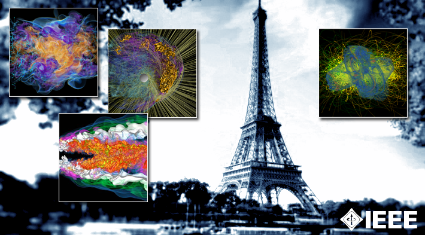

Join us for LDAV 2015 in Chicago, October 25, 26
LDAV 2014 - BigData Analysis and Visualization
In many areas of science, simulations and experiments begin to generate many petabytes of data, with some sciences facing exabytes of data near term. Similarly, the collection of information about the Internet applications and users for a variety of purposes is generating only more data. Our ability to manage, mine, analyze, and visualize the data is fundamental to the knowledge discovery process. That is, the value of data at extreme scale can be fully realized only if we have an end-to-end solution, which demands a collective, inter-disciplinary effort to develop.
This new symposium, held in conjunction with IEEE VIS 2014, aims at bringing together domain scientists, data analytics and visualization researchers, and users, and fostering the needed exchange to develop the next-generation data-intensive analysis and visualization technology. Attendees will be introduced to the latest and greatest research innovations in large data management, analysis, and visualization, learn how these innovations impact data intensive computing and knowledge discovery, and also learn about the critical issues in creating a complete solution through both invited and contributed talks, and panel discussion. Paper submissions are solicited for a long paper event that describes large data visualization techniques and systems, and a short paper event for practitioners to describe and present their large data visualization applications. Topic emphasis is on algorithms, languages, systems and hardware that supports the analysis and visualization of large data.
There are a variety of ways to participate in LDAV 2014 - papers, posters, and attending. We hope to see you there! Registration is through the IEEE VIS website.
Keynote Presentation
Anders Ynnerman: "Inside Information - From Martian Meteorites to Mummies"
Awards
Best Paper:
Alexy Agranovsky, David Camp, Christoph Garth, E. Wes Bethel, Kenneth I. Joy and Hank Childs.
University of California Davis, Lawrence Berkeley National Laboratories, University of Oregon, and University of Kaiserslautern.
"Improved Post Hoc Flow Analysis Via Lagrangian Representations"
Best Paper Honorable Mention:
Henry Lehmann and Bernhard Jung, Virtual Reality and Multimedia Group, Technical University, Bergakademie Freiberg.
"In-situ Multi Resolution and Temporal Data Compression for Visual Exploration of Large Scale Scientific Simulations"
Best Poster:
Jillian Aurisano, Khairi Reda, Andrew Johnson and Jason Leigh
"Bacterial Gene Neighborhood Investigation Environment: A Large-Scale Genome Visualization for Big Displays"
Best Poster Honorable Mention:
Fabien Vivodtzev and Isabelle Bertron
"Remote Visualization of Large Scale Fast Dynamic Simulations in a HPC Context"